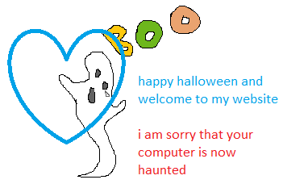
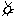

this is my website and i can cry if i want to
by jake trower
: (

news:
i redesigned my website!
links
game collection site
my tumblr art blog dump
twitter presence
bad designs
old design 1
resume & about me
i work at google
i need to go to sleep and stop working on this
